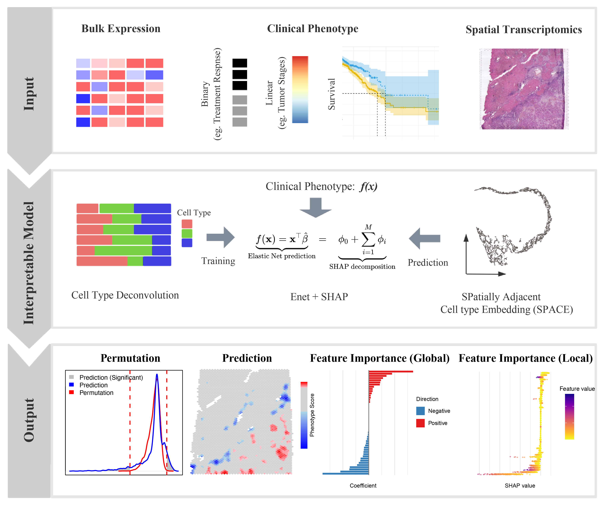

SpaPheno: Linking Spatial Transcriptomics to Clinical Phenotypes with Interpretable Machine Learning
Overview
Linking spatial transcriptomic patterns to clinically relevant phenotypes is a critical step toward spatially informed precision oncology. Here, we introduce SpaPheno, an interpretable machine learning framework that integrates spatial transcriptomics with clinically annotated bulk RNA-seq data to uncover spatially resolved biomarkers predictive of patient outcomes. Leveraging Elastic Net regression combined with SHAP-based attribution, SpaPheno uniquely identifies spatial features at multiple scales—from tissue regions to specific cell types and individual spatial spots—that are associated with patient survival, tumor stage, and immunotherapy response. We demonstrate the robustness and generalizability of SpaPheno through comprehensive simulations and applications spanning primary liver cancer, clear cell renal cell carcinoma, breast cancer, and melanoma. Across these diverse settings, SpaPheno achieves high predictive accuracy while providing biologically meaningful and spatially precise interpretations. Our framework offers a powerful and extensible approach for translating complex spatial omics data into actionable clinical insights, accelerating the development of precision oncology strategies grounded in tumor spatial architecture.

The Overview of SpaPheno
☀️ Key Features
Integration of spatial transcriptomics with clinically annotated bulk RNA-seq data
Multi-scale interpretable machine learning framework
Robust applicability across diverse cancer types and clinical endpoints
⏬ Installation
if (!require("BiocManager", quietly = TRUE)) {
install.packages("BiocManager")
}
## Install suggested packages
# BiocManager::install(c(
# "glmnet",
# "FNN",
# "survival"
# ))
# install.packages("devtools")
# devtools::install_github("bm2-lab/SpaDo")
# SpaPheno installation
# devtools::install_github("Duan-Lab1/SpaPheno", dependencies = c("Depends", "Imports", "LinkingTo"))
library(SpaPheno)
library(tidyverse)
library(ggplot2)
library(reshape2)
library(stringr)
library(survival)Download the pre-packaged installation package directly from the GitHub repository
install.packages("SpaPheno_0.0.1.tar.gz", repos = NULL, type = "source")🚀 Quick Start
Data availability
The data required for the test are all listed in the following google cloud directory SpaPheno Demo Data.
├── BRCAsurvival.RData
├── HCC_stage.RData
├── HCC_survival.RData
├── KIRC_survival.RData
├── Melanoma_ICB.RData
├── Simulation_osmFISH.RData
└── Simulation_STARmap.RDataIn addition to the demonstration datasets above, we provide standardized pan-cancer bulk and single-cell reference resources to support cross-cohort and multi-omic applications of SpaPheno SpaPheno TCGA-scRNARef-Dataset:
| No. | TCGA Standard Cancer Type | Corresponding Single-Cell Data Original Naming |
|---|---|---|
| 1 | BLCA | BLCA |
| 2 | BRCA | BRCA / Breast |
| 3 | CESC | CESC |
| 4 | CHOL | CHOL |
| 5 | COAD | CRC |
| 6 | ESCA | ESCA |
| 7 | HNSC | HNSC / HNSCC / Oral |
| 8 | KICH | KICH |
| 9 | KIRC | KIRC |
| 10 | LIHC | LIHC / Liver |
| 11 | LUAD | LUAD |
| 12 | LUSC | LSCC |
| 13 | OV | OV / Ovary |
| 14 | PAAD | PAAD |
| 15 | PRAD | PRAD |
| 16 | SKCM | SKCM |
| 17 | STAD | STAD |
| 18 | THCA | THCA |
| 19 | UCEC | UCEC |
| 20 | UVM | UVM |
- TCGA Pan-Cancer Bulk Expression and Clinical Data:
Processed RNA-seq gene expression profiles (raw counts) and corresponding clinical annotations (including survival outcomes, tumor stage) for 20 common cancer types from The Cancer Genome Atlas (TCGA) are available. The included cancer types are listed in the table below, with unified gene symbols and standardized phenotype annotations to facilitate direct use with SpaPheno:
TCGA-n20PanCaner_Dataset
├── TCGA-BLCA
│ ├── BLCA_summary.csv
│ ├── BLCA_expression_by_gene_name.tsv
│ ├── BLCA_expression.tsv
│ ├── BLCA_phenotype_with_survival.csv
│ └── BLCA_phenotype.csv
├── TCGA-BRCA
├── TCGA-CESC
├── TCGA-CHOL
├── TCGA-COAD
├── TCGA-ESCA
├── TCGA-HNSC
├── TCGA-KICH
├── TCGA-KIRC
├── TCGA-LIHC
├── TCGA-LUAD
├── TCGA-LUSC
├── TCGA-OV
├── TCGA-PAAD
├── TCGA-PRAD
├── TCGA-SKCM
├── TCGA-STAD
├── TCGA-THCA
├── TCGA-UCEC
└── TCGA-UVM- TabulaTIME Single-Cell Reference Data:
Matched single-cell RNA-seq reference datasets for the above cancer types, derived from the TabulaTIME database, are provided as preprocessed Seurat objects. These datasets include cell type annotations, enabling direct integration with spatial transcriptomics data for cell type deconvolution and spatially resolved interpretation in SpaPheno.
TabulaTIME_scRNA_ref/
├── TabulaTIME_reference_summary.csv
├── BLCA_ref.rds
├── BRCA_ref.rds
├── CESC_ref.rds
├── CHOL_ref.rds
├── CRC-COAD_ref.rds
├── ESCA_ref.rds
├── HNSC_ref.rds
├── KICH_ref.rds
├── KIRC_ref.rds
├── LIHC_ref.rds
├── LSCC-LUSC_ref.rds
├── LUAD_ref.rds
├── OV_ref.rds
├── PAAD_ref.rds
├── PRAD_ref.rds
├── SKCM_ref.rds
├── STAD_ref.rds
├── THCA_ref.rds
├── UCEC_ref.rds
└── UVM_ref.rdsTutorial
For more information and documentation, please visit the SpaPheno website.
📖 Vignette
Using the following command and Choosing the html for more details.
utils::browseVignettes(package = "SpaPheno")💖 Contributing
Welcome any contributions or comments, and you can file them here.
✴️ Citation
Kindly cite by using citation("SpaPheno") if you think SpaPheno helps you. Alternative way is Duan, B., Cheng, X. & Zou, H. SpaPheno: linking spatial transcriptomics to clinical phenotypes with interpretable machine learning. Genome Med (2026). https://doi.org/10.1186/s13073-026-01645-7